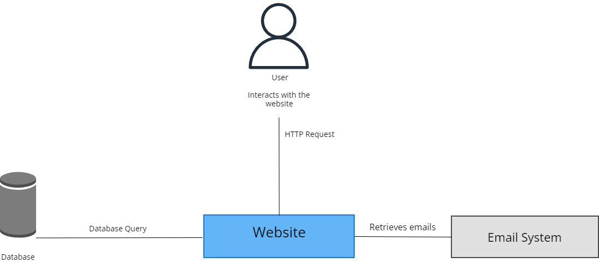
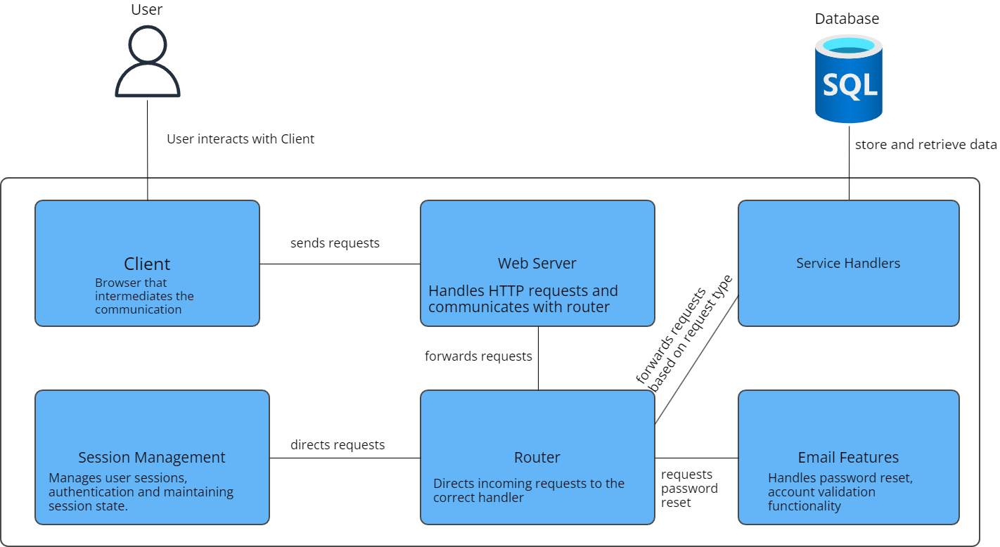
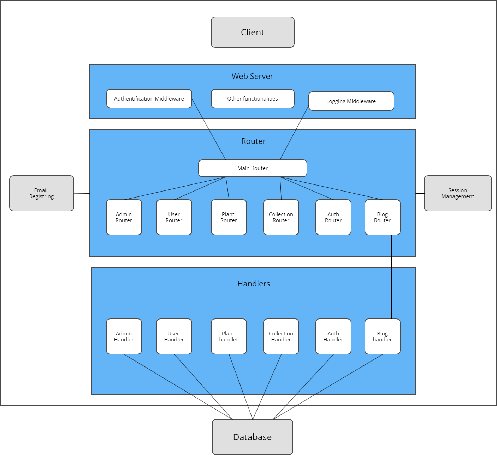

HeMa (Herbal Web Manager) represents an innovative implementation of a plant collection management system structured in an advanced document format known as Scholarly HTML. This web platform facilitates not only the management and cataloging of botanical species by enthusiasts and researchers but also provides extended blogging functionalities and community interaction all accessible through an optimized web interface. This documentation details the architecture, encoding, and functionalities of the system, with a particular emphasis on interoperability with modern browsers and the adoption of open standards for the exchange of scholarly articles. Utilizing Scholarly HTML, HeMa aims to set a new standard in digital publishing in the field of botany, enhancing the accessibility, discovery, and management of data in an academic and research environment.
This webpage is written in accordance with the Scholarly HTML template - a domain-specific rich document format. The role of this documentation is to present the esential functionalities of our website and its user interaction. The structure follows the IEEE System Requirements Specification Template.
For detailed information on these templates, please refer to the Scholarly HTML and IEEE System Requirements Specification Template.
This Software Requirements Specification (SRS) document outlines the specifications for the development of a web application aggregator intitulated HeMa. The purpose of this document is to clearly define the scope, objectives, and goals of the project, including the management of collections of plants stored on our platfrom, the forum aspect of the page where people can share their collections and the blogs page where people can share tips about gardening or plant related subjects
The SRS follows standard document conventions, including clear formatting, headings, and section numbering for easy navigation. In this document, the typographical conventions follow the Roboto font, with the fallback font of sans-serif.
This document is intended for the two developers of the site involved in the development and deployment of the web application, serving as an outline for the overall website. The targeted audience also includes the users of the website and the coordonator(s) of the project (Web technologies professors from UAIC University). Readers are encouraged to start with the Introduction chapter and progress to sections relevant to their role or interest.
In the current landscape of digital publishing, many academic fields face the challenge of efficiently managing scientific data in an accessible and structured format. Despite the availability of advanced documentation technologies, much of the valuable information generated in research remains encapsulated in unstructured formats, which significantly limits their potential for discovery and subsequent use.
HeMa (Herbal Web Manager) is a platform designed to address these challenges, offering an integrated solution for managing, presenting, and exchanging botanical information. Utilizing the Scholarly HTML format, HeMa proposes a standardized and extensible methodology for documenting and sharing knowledge in the field of botany. This enriched format allows not only the precise representation of scientific data but also advanced interaction with it, while supporting the principles of accessibility and internationalization.
According to a report from the New York Times, the introduction of structured information into their culinary recipes improved their discoverability, leading to an immediate 52% increase in traffic. This example highlights the significant benefits that structuring and standardizing data can bring in any field, including the academic and scientific domain.
HeMa applies these principles by offering a platform where scientific articles, plant collections, and user blogs are managed and presented in a way that not only improves accessibility and discoverability but also enhances interactivity and the overall functionality of the content. This approach places a significant burden on tool developers and service providers who must explore the world of extracting data from static publications and build a complex set of tools while simultaneously offering interoperability and opportunities for cooperative improvements.
To meet these challenges, HeMa adopts an approach rooted in established best practices for the reuse of open and standardized formats. We propose an "HTML Vernacular", a set of guidelines for creating domain-specific data formats that utilize the inherent extensibility of HTML. This vernacular foundation, overlaid with schema.org metadata and proposed extensions to it, has produced a format for the authoring and exchange of scholarly articles built on open standards, ready for use by everyone, including independent researchers who choose to publish their articles on their own.
This chapter describe the logical characteristics of each interface between the software product and the users. Our website aims to use a minimalist style in order to make the user flow/navigation simpler. The choosen design should enhance the user experience. Because the design is so simple, there should be a minimal difference between the Web and Mobile versions.
This is the initial presentation of the HeMa platform, designed with an intuitive and engaging user interface catering to both guest visitors and registered users. The landing page offers a concise overview of the site's functionalities adorned with a rotating gallery of plant images that highlight the essence of HeMa as a plant collection manager.

The Login page is the gateway for users to access their personal HeMa accounts. The user-friendly design requires only essential information like username or email and password.

The Signup page stands as an invitation to join the HeMa community. Future users can create a unique account using their email and a chosen username. The design ensures a quick but secure registration process, preventing the creation of multiple accounts with the same email or username.

Once logged in, users are welcomed to the main page which serves as the central hub for all HeMa functionalities. Here, users can access different plant collections, manage their profiles, and get helpful plant care tips, all through an inviting interface embellished with thematic plant imagery.

Users can customize their experience on the My Account page by changing usernames, passwords, and reviewing their plant collection and shopping history.

The My Garden page allows users to manage their personal plant collections which were taken from a large database of existing species.

The Blog page is where users can create and share their articles or experiences about plant care, botanical research, and more. It serves as a platform for community engagement and knowledge sharing. This page allows users to post new content, edit existing posts, and interact with other community members through comments.

The Collection Page allows users to view, manage, and organize their personal plant collections. This page provides detailed views of each plant, including care tips, scientific classifications, and the ability to add or remove plants from their collection. It is designed to be highly interactive and user-friendly, facilitating easy management of plant data.

HeMa allows users of the platform to interacted with other users collections that they shared on the website, this can be done using the form page where they can search using multiatributes specific collections and they can see it in 2 different modes, a text based one and a more visually appearing one

Database: Utilizing a robust MySQL database, HeMa efficiently handles a vast array of data from user transactions to detailed plant information. Encased in a Docker container, the database guarantees both security and portability.
Server: The server stands as the backbone of HeMa, ensuring all user requests are handled with speed and reliability, fostering a seamless user experience.

The C4 model is a framework for visualizing the architecture of software systems. It consists of different diagrams that illustrate the system's context, containers, and components, providing a comprehensive view of the application's structure and interactions.
The Context Diagram provides a high-level overview of the HeMa system, showing its interactions with external entities such as users and external systems. It depicts the system in its environment, identifying primary user roles and external systems that interface with HeMa.
The Container Diagram zooms in to show the high-level technical architecture of the HeMa system. It illustrates the various containers such as the web application, the database, and other supporting services. This diagram highlights how these containers interact and the technologies used for implementation.
The Component Diagram breaks down the containers into finer-grained components. It details the internal structure of the web application, showcasing individual components like the user interface, authentication module, plant collection manager, blog manager, and others. This diagram helps in understanding how the system's functionality is partitioned and organized within containers.

The diagram above illustrates the high-level architecture of the HeMa server, showing how different components interact with each other.
The HeMa platform is built on a robust and scalable server architecture designed to handle a large number of user interactions and data transactions efficiently. The server-side application is developed using modern web technologies and frameworks to ensure high performance, security, and maintainability.
The server architecture consists of several key components, including the web server, application server, and database server. These components work together to provide a seamless user experience and efficient data management.
The HeMa application uses a RESTful API to manage communication between the client and server. Below are the detailed routes and paths used in the application, including their specific functionalities and usage:
GET /api/user - Retrieves the full profile details of the authenticated user. This includes username, account settings, and links to user-generated content. Requires active session authentication.GET /api/id - Provides the unique identifier for the authenticated user, crucial for integration with other internal systems or when linking user data across different platforms.POST /api/register - Allows new users to create an account by submitting their email, chosen username, and password. This endpoint also handles initial data validation and sends a confirmation email.POST /api/login - Authenticates a user based on the provided email or username and password. Returns a session token that must be included in subsequent API requests that require authentication.GET /api/collections - Retrieves all plant collections associated with the authenticated user. This includes collection names, plant species, care instructions, and metadata such as creation dates and modification history.GET /api/allSharedCollections - Fetches all plant collections that have been shared publicly by users across the platform. Useful for discovering new plants and inspiring community engagement.GET /api/blogs - Retrieves all blog posts from the platform, including posts by the user and others. Supports pagination and filtering by tags or dates.POST /api/blogs - Allows users to create a new blog post. Users must provide the blog title, content, and optionally, images and links. Supports markdown and HTML content.GET /api/feed - Provides a personalized feed of plant collections and blog posts curated based on the user's interests and previous interactions. Includes likes, comments, and shared posts.POST /api/feed/search - Enables searching within the feed for specific collections or blog posts based on criteria such as plant types, popularity, and user ratings.GET /rss - Offers an RSS feed for users who prefer to receive updates via RSS readers. Includes updates on new blog posts and community news.The HeMa platform leverages a range of dependencies to facilitate various functionalities, from encryption to email communication and PDF generation. Below is a list of the key dependencies used in the project:
bcrypt (v5.1.1): Used for hashing and encrypting user passwords to ensure secure authentication.crypto (v1.0.1): Provides cryptographic functionality for various security operations.csv-parser (v3.0.0): A module for parsing CSV files, useful for importing and processing data.csv-writer (v1.6.0): Used for writing data to CSV files, supporting export functionalities.dotenv (v16.4.5): Loads environment variables from a .env file, simplifying configuration management.formidable (v3.5.1): Handles file uploads and form data parsing, essential for managing user inputs.mysql2 (v3.10.1): A MySQL client for Node.js, enabling database interactions and queries.node-cron (v3.0.3): A library for scheduling tasks, used for periodic data updates and maintenance.nodemailer (v6.9.13): Facilitates email sending, crucial for user notifications and password resets.pdfkit (v0.15.0): A tool for generating PDF documents, used for creating reports and exporting data.swagger-ui-dist (v5.17.14): Provides a visual interface for the API documentation using Swagger UI.yamljs (v0.3.0): Parses YAML files, useful for configuration and data management.The HeMa platform also relies on external APIs to enhance its functionalities and provide a richer user experience. The following are the key external dependencies used in the project:
Account Interface: With endpoints like register, login, logout, reset-password, and verify-email, HeMa ensures secure and efficient management of user accounts, aiding users in the safe handling of their credentials.
The site requires users to log in to access the full range of functionalities. To log in, users must enter their email address or username and the corresponding password for their account.
To create an account, new users should visit the Registration page and provide an email address, a username, and a password. After registering, they will receive an email to confirm their email address.
For security, the database does not store user passwords. If a user forgets their password and cannot access their account, they should enter their email address on the password reset page. They will receive an email with a link to set a new password.
Users can manage their plant collections by adding new plants, updating existing plant details, or removing plants from their collection. Each plant entry allows for detailed descriptions, care instructions, and personalized tags.
This feature allows users to create and manage multiple plant collections. Each collection can be named and described individually, helping users organize plants based on different themes or care requirements.
Users can create personal blogs to share their gardening experiences or tips. The blog section supports text, images, and links, allowing for rich, engaging content. Readers can browse through various blog entries, comment on them, and share them on social media.
The Feed feature provides users with updates from other plant enthusiasts. It includes new blog posts, popular plant collections, and trending topics within the community. Users can customize their feed based on their interests.
The Admin Dashboard offers tools for site administrators to manage user accounts, moderate content, and view detailed reports. Features include user management, content approval, and analytics. Specific tools like 'List of Clients', 'Report Manager', and 'Generate Reports' allow for comprehensive site management.
Each user has a profile where they can display their plant collections, blog posts, and personal details. Profiles can be customized with images, biographical information, and links to social media.
Developers can access the platform's functionalities through a comprehensive API. The API supports common methods such as GET, POST, PUT, DELETE, and UPDATE, enabling integration with external systems and applications.
Users can interact with each other by sharing collections, commenting on blogs, and participating in community challenges and events. This feature fosters a vibrant and supportive online community of plant enthusiasts.
Users can perform detailed searches within the platform, using filters like plant name, collection type, and date added. This allows users to easily find specific plants or collections shared by others.
Administrators have access to detailed reports and analytics, helping them understand user behavior and site usage. This includes data on user engagement, popular plants, and blog interactions.
In the first part of the development, the website will be stored locally on the users' personal computer. It can be downloaded from this GitHub page.
As for the end user perspective, this product shouldn't require too high specifications, as an internet connection and a web browser will suffice. Even if the used browser isn't compatible with all of the product's features, there should be some fallback methods, allowind the user experience to be as close as possible to the maximum potentional of the website.
It's important to note that our product will be available on any type of device (PCs, phones, tablets, etc.). Therefore, its design shall be responsive.
Our users can find a README.md file on the previously specified GitHub Repository. The
choosen design for our product should be simple enough to make the user experience as intuitive as
possible, thus overcomind the need for documentation. However, there will be a page which will inform
all the users of the limitations imposed by our website, mainly the number of photos that can be
collected in a period of time from another application. If any, the limitations of uploading a photo to
these websites will be also documented.
In addition to being responsive across various frame sizes, including monitors, laptops, tablets, and phones, the website is optimized for quick load times and smooth transitions between pages. The dynamic content loading feature ensures that users experience minimal wait times as they navigate through the extensive plant collections and blog entries.
Beyond the hashing of passwords, the website employs advanced encryption techniques to safeguard user data during transmission and storage. All personal data management conforms to GDPR standards, ensuring user consent and data rights are at the forefront of our platform's operation.
HeMa will encrypt all sensitive user data, including passwords and personal information, while storing them. Also, it will use secure communication protocols, such as HTTPS, for all data transmission between clients and server.
HeMa website must implement measures to prevent code injection vulnerabilities, such as SQL Injection or command injection. Input validation and sanitization must be performed on all user-supplied data to ensure that it does not contain malicious code.
The website adheres to stringent privacy protocols, not only aligning with GDPR but also providing users with comprehensive control over their personal information. Users can easily access, rectify, or delete their data upon request.
To maintain the highest standard of compliance, the website regularly updates its policies to align with the latest legal and regulatory requirements. This includes periodic reviews of user agreements and privacy statements, as well as incorporating user feedback to address any concerns related to data handling and user rights.
The final product will have two different types of users, they wont have to respect the same rules on the website. All of them will need to log into our website, through the login page but one will choose to log as an admin and one as a user. There won't be any given restrictions to the registred accounts. Only the developers will have access to the website's database. The admins will be able to generate pdf/csv files containg data related to plants and the users of the platform, see all the users and ban anyone who doesnt respect the internal rules.